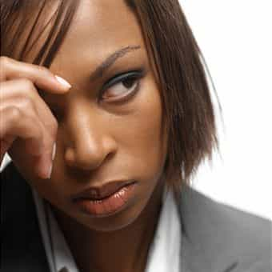
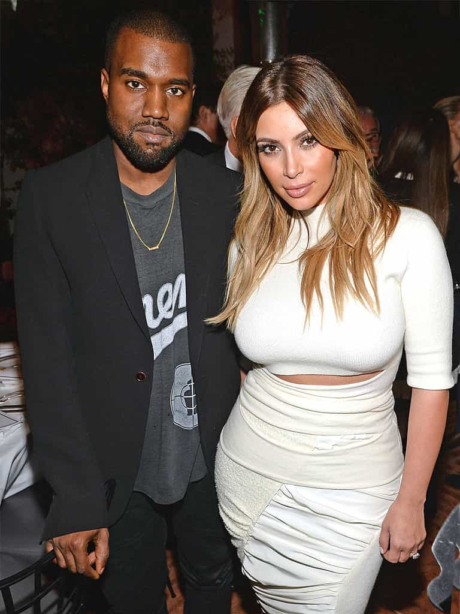

< < < Back
Are Black People More Racist Than White People? – Return Of Kings
When I moved to the South as a teenager I got a glimpse of race relations up close for the first time in my life, and one thing that quickly became surprisingly evident was the disdain black people had for white people. This wasn’t the case with everyone but the undercurrent of their resentment was noticeable.
Then I went to college where diversity, love, togetherness, and every other feel good cause were front and center and that seemed to change my hunch for a while. But when I left and went back to the real world it was right back in my face.

Diversity! Feeeelzzz! Justice!
Living in more than a dozen states over the last 20 years was enough of a sample size for me to draw the conclusion that blacks might very well be more racist than whites. My second stint in a certain city put the nail in the coffin.
The ATL
Those who have read my columns know and understand that I don’t exactly hold Atlanta in the highest regard. It’s not a terrible city because it does have its perks (such as the abundance of Latinas in and around the city) but by and large I’m not the biggest fan of The Big Peach.
The main reason I left after just 6 months my second time around was because of the black people. The victim mentality, ghettos, criticism of anything not related to black culture, and a shitload of other things got old quick.
What set the tone for my short stay was when a coworker of mine was on his usual soapbox about how black people were “oppressed” and that racism was at an all time high—the usual bullshit that people like him talked about ’round the clock.
I grew increasingly tired of his preaching so rather than trying to have a conversation with him about it (which I knew wouldn’t do any good), I showed him a video to let him know that we may not have it as bad as people in other countries:
His response? “Well we have it worse here because racism is covert. At least they keep it real over there and say it to your face.”
Un. Fucking. Believable.
These conversations were a regular occurrence with this idiot and unfortunately his mentality was prevalent in this city.
Another huge problem in Atlanta is that black people purposely separate themselves from other races. It seemed that they only associated with blacks whether it be socially, in their business dealings, religiously, or anything else they could think of. Even the shows they watch are predominantly black.
Sure, the black population down there is higher than most major cities which factors in. But how the hell can these people complain about segregation and the importance of diversity if they’re the ones actively separating themselves?
Black women DESPISE white women

Best believe she hates white girls
Years ago my ex wife and I were at mass, and in front of us sat a black woman and her two daughters. It was still early so people were still filing into their seats and awaiting the priest to make his appearance and start the proceedings.
Just before things got started a white family took their seats next to the black family. Nothing out of the ordinary there…except for the fact that the two young black girls looked at the blonde white girl with a disgust that was so pronounced my wife and I exchanged uncomfortable glances.
The sad part about this is that those two black girls were too young to dislike the white girl simply because of her pale skin. The hard truth is they’re being indirectly (and probably also directly) taught to hate white people by their mother, their culture, and everything they consume.
Those two little girls will grow up to shoot dirty looks at white girls and complain to each other that they are stealing “their men.” This mindset will permeate all of their thoughts and actions. Before they know it they’ll start to blame white people for all of their “struggles,” especially their lack of romantic options.

They can say whatever they want but this is the real reason black women hate on Kim K
Even my own mother would turn up her nose at my white high school girlfriends. These days she’s much more laid back about my choice in female companionship (age, introspection, and perspective will do that) but she never passed up the opportunity to ask “Why can’t you find a nice African-American girl, Donovan?” I never answered because I knew I’d earn a swift hand to the face.
This article is but a sliver of the pie that is the prevailing attitude about black men like myself who date outside our race. The title alone is all you need to know about where they stand on this issue.
Fatally obsessed with women of a lighter persuasion, Tiger Woods might be the only one on this list who actually has a medical condition. Woods has had more blonde prostitutes than a season’s worth of “Game Of Thrones.” Still, after losing a hefty $100 million in his divorce settlement, he swiftly scooped up another one to share the rest of his riches.
The sooner black women accept and understand that their lack of dating options isn’t because of white girls (or any other race for that matter) the better off they’ll be.
Legally speaking
Remember the O.J. Verdict? Remember the outright glee black people reacted with when the verdict was read? Remember how uncomfortable we were watching people celebrate that someone had gotten away with murder just because he was black?
The Simpson trial was not only the trial of the century, it shined a spotlight on how black people in this country really felt about whites. The fact that this occurred only a few short years after the Rodney King incident and in the same geographical area only heightened the blood lust for “one of ours” to get over on “one of theirs.”
Let’s face it. They had O.J. dead to rights. All the evidence pointed to his guilt (except for these) but because of the exploits of Mark Fuhrman, an obviously tainted jury pool trying to “make up” for what happened to King, and the best criminal defense lawyer money could buy, Simpson walked.

The most infamous mug shot of the 20th century
In an honest moment any reasonable person, black or white, would tell you he should have been convicted. Yet, to this day blacks still declare that he didn’t do it (including the wannabe Malcolm X I showed the above video to) knowing damn well they wouldn’t bet dollars to death on his innocence.
The cases of Trayvon Martin and Michael Brown are also prime examples where the fact that both of them being black clouded the common sense and judgement of black people. Race baiters like Al Sharpton and Jesse Jackson didn’t waste any time stoking the flames of racism to line their pockets and increase their prominence in the public eye.
Is it a tragedy that both of these young men were killed as teenagers? Of course it is. Nobody’s disputing that. But similar to the feminist agenda, the problem is in the narrative and this ROK article could not have stated it any better:
Janay Rice wasn’t sitting on the couch minding her own business when Ray walked up and punched her in the face. Rihanna wasn’t making pancakes when Chris Brown walked in the kitchen and slapped the shit out of her.
Brown and Martin weren’t sitting under trees studying for midterms when accosted by their would-be assassins. This isn’t to say they deserved to die, but they most certainly were not innocent little snowflakes minding their own business.
And thanks to people like Louis Farrakhan, black people have a blind rage without knowing all of the facts which only further deepens the racial divide.
All they have to hear is “white man shoots black man” and they instantly jump to outrage because of the dangerous precedents set by the chronicling of comparable events of the past.
The gross exploitation of a double standard
Black people publicly talk shit about white people (and other races) on the regular and most people don’t say anything about it. Whether it’s out of fear or social pressure, anything that remotely resembles racism towards blacks is avoided like the plague.
Fellow columnist and friend Blair Naso is my go-to guy for anecdotes on race issues. Having lived in the South a combined 40+ years we often swap stores and have great conversations. Naso’s right in the thick of things down there so he’s able to offer accurate, detailed accounts of race related events.
One such conversation was the genesis of this column and when I asked Naso’s opinion on this he didn’t pull any punches:
Which of the two is more racist in actuality? I’m not sure. But most white racism is benign, whereas black racism often hurts people. They’ll gun you down for being white and walking on their side of town and then justify it because of slavery.
Well said.
Blacks, on the other hand, are given a free pass to use all sorts of racial slurs but the moment someone of a different race even broaches the subject of a possible pitfall of the black race, we get up in arms.

Good question, Captain…
Political correctness is the shield blacks hide behind—that’s “pussy pass” in neomasculine-ese. They know that if a caucasian insinuates a racial element in any given situation they’ll be attacked and sometimes eviscerated. Whereas if black people do the same thing, they’re often defended by the hamster wheel of the culture and media and exonerated of any wrong doing.
Case in point: The Donald Sterling scandal. For those unfamiliar with this story, the long and short of it is Los Angeles Clippers owner Donald Sterling was recorded by his mistress during a racial tirade. This set off a media firestorm which ultimately led to the team being taken from Sterling and subsequently sold to former Microsoft CEO Steve Balmer.
I can say with near 100% certainty that if Sterling was black and made these comments about white people he’d still have his team.
While I don’t agree with Sterling’s world view, I strongly disagreed with him being stripped of his team because of his views. I’m willing to bet he’s not the only owner who shares his perspective (on some level at least). But the only difference between them and Sterling is that Sterling voiced his politically incorrect opinion on front of a woman who violated his privacy and made it public.

Sterling with the woman who would eventually betray him
A spin-off of this saga was a statement made by Dallas Mavericks owner Mark Cuban in the midst of the Sterling story gaining traction:
If I see a black kid in a hoodie and it’s late at night, I’m walking to the other side of the street. And if on that side of the street, there’s a guy that has tattoos all over his face–white guy, bald head, tattoos everywhere–I’m walking back to the other side of the street.
Once again the PC Police reared its ugly head and Cuban was predictably crucified for his remarks. There were a few that publicly defended him but by and large his comment was not taken very well. Nevermind the fact that he used a white person in one of his examples. All blacks heard was “black kid,” “hoodie,” and “other side of the street” and we lost our minds.
Black people in this country know and exploit this double standard ad nauseam, and black comedians and actors are no different. They literally trade on this double standard and use it to make quite a nice living for themselves while similar acts would all but end the careers of whites in this field. Remember this little gaffe?
Muslims and Panthers and colored people OH MY!
Two groups in particular have made it crystal clear they have no intention of improving relations with whites: The New Black Panther Party and Black American-born Muslims. We’ll get to the NBP in a minute but let me be clear here about Muslims in this country: I’m not talking about the ones that are born and raised in Muslim nations. I’m talking about blacks in this country that convert to Islam.
Funny thing is, most black American Muslims I’ve talked to seem to have one thing in common: the utter hatred of white people.
My first stint in Atlanta showed me how crazy these “converts” were when one knucklehead had the gall to say “Osama bin Ladin is a great man!” in the wake of the 9/11 attacks. I immediately knew what he was playing at so I coolly shrugged my shoulders and asked “Well why is that? What great things has he done?”
Silence. He didn’t have an answer because I was supposed to fly off the handle and start spewing the red white and blue blues and scream at him for betraying ‘Murica. All his statement was designed to do was illicit a reaction. It wasn’t to educate or inform me. The guy just wanted to piss me off because I poked holes in his “philosophies” and he threw a Hail Mary to try and win the argument…just like a woman.

These people are unbearable
Believe it or not, the New Black Panther Party is worse. Formerly led by the outwardly racist crackpot Malik Zulu Shabazz (who felt the need to shed his “slave name” Paris S. Lewis), the NBP has a well earned reputation for the ridiculous notions they abide by.
How crazy are they you ask? These loons backed Crystal Mangum when she accused three Duke LaCrosse players of gang raping her. That’s pretty fucking crazy in my book.
Note: (Dis) honorable mention goes to the NAACP who is as guilty as any group out there for fanning the flames of racism.
Conclusion
Racism is real and it exists. I get it. I certainly don’t blame older Black Americans who lived through the Civil Rights Movement and still bear the scars of past racism. That shit was tough to get through (thank God for Martin Luther King, Jr.) so I can understand if blacks of generations past still carry that resentment with them.
However, any black person who didn’t live in that era and have the audacity to squawk about reparations, “the man,” equality, or anything related to race as it pertains to black people are as bad, if not worse, than feminists as far as I’m concerned. Feminists ask “where have all the good men gone” but do nothing to improve themselves as women. That mentality is no different than blacks who “fight the power” on a daily basis.

Blacks act like we’re living in this age
Hell, we even shame our own when one of us doesn’t toe the proverbial company line. Charles Barkley has been the target of harsh criticism for calling out the looters in Ferguson (to which he responded in kind).
Similarly, Dr. Ben Carson is also looked at as something of a villain in the black community simply because he is unafraid to publicly criticize President Obama and doesn’t buy into the bullshit ideals of cooks like Shabazz or “Dr.” Jeremiah Wright and makes no bones about it.
Improving race relations in America is going to take a seismic shift of epic proportions in American culture. White people have been reigned in (mostly) on racist action and speech. It is high time blacks are held to the same standard. If more of us took the Barkley or Carson approach to life we’d be a lot better off as a people.
Read Next: How Black America Has Predicted Our Future